Géographie et éducation à la citoyenneté
01 / 12 territoires
La métropole
Territoire urbain · Locale · L'aménagement et la gestion d'une grande ville
- aménagement
- banlieue
- bidonville
- concentration
- croissance
- densité
- déséquilibre
- étalement urbain
- métropole
- multiethnicité
- urbanisation
- Montréal (obligatoire)
- Le Caire
- Mexico
- New York
- Sydney

Mise en contexte
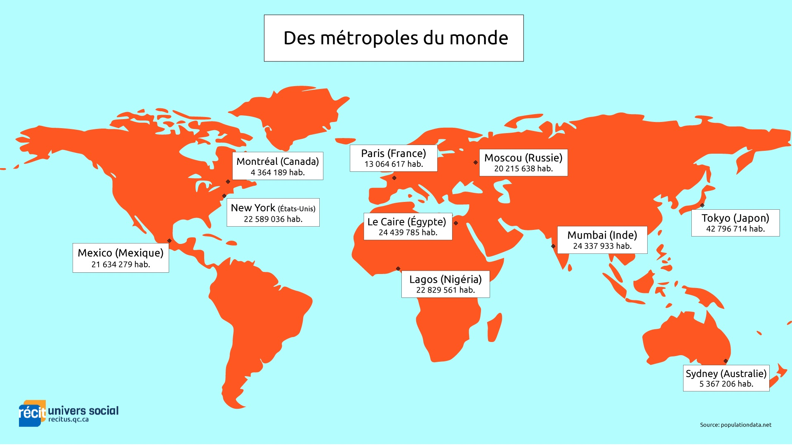
Source
Service national du RÉCIT, domaine de l'univers social, Contexte, dossier documentaire Territoire urbain : la métropole, Service national du RÉCIT, univers social. Licence : Creative Commons BY-NC-SA.Le territoire urbain occupe une place de plus en plus grande dans le monde. Selon les définitions utilisées par les pays eux-mêmes, 58 % de la population mondiale vivait en ville en 2025, contre 20 % en 1950. L'étude de différents territoires urbains permet d'aborder une diversité de problèmes sociaux et environnementaux.
Une métropole est une importante agglomération urbaine, un lieu de concentration de pouvoirs et de services. Elle exerce un pouvoir d'attraction sur la région environnante et même sur l'ensemble du pays. Elle est le théâtre d'enjeux qui concernent notamment l'accessibilité au logement, l'organisation du transport, la gestion des déchets, l'approvisionnement en eau et la santé des résidents. Sur cette page, il sera question de la métropole du Québec, Montréal.
Concepts à l'étude
- Aménagement : l'ensemble des interventions par lesquelles on organise un territoire, en y installant des logements, des routes, des parcs et des services.
- Banlieue : une agglomération située autour de la ville principale. Les banlieues sont assez éloignées de la ville pour avoir leur indépendance politique, tout en étant assez rapprochées pour participer à sa vie sociale et économique.
- Bidonville : une agglomération de bâtiments sans hygiène, faits de tôle et de matériaux de récupération, où vit la population la plus pauvre et la plus à risque. Montréal n'en compte pas, mais tu en trouveras dans d'autres métropoles au programme, comme Le Caire ou Mexico.
- Concentration : le regroupement d'un grand nombre d'éléments sur un même territoire, qu'il s'agisse d'habitants, d'emplois, de services ou de lieux de pouvoir.
- Croissance : l'augmentation de la population ou de la superficie bâtie d'une ville pendant une période donnée.
- Densité de population : le nombre d'habitants par kilomètre carré. On l'obtient en divisant la population totale par la superficie totale. Par exemple 700 hab./km².
- Déséquilibre : l'écart entre deux parties d'un même territoire dans la répartition de la population, des services ou des richesses.
- Étalement urbain : l'expansion du territoire urbain en périphérie des villes, produite principalement par le développement des banlieues et la construction des autoroutes.
- Métropole : une grande ville qui se distingue par sa forte densité de population, son pôle économique majeur, son effervescence culturelle et médiatique et ses nombreux services offerts à la population, comme les hôpitaux, les transports en commun, les médias et les universités. Au Québec, il s'agit de Montréal.
- Multiethnicité : la présence, sur un même territoire, de populations venues de nombreux pays et parlant de nombreuses langues.
- Urbanisation : le phénomène par lequel une population se concentre de plus en plus dans les villes. Il entraîne le développement de la ville ainsi que des services et des activités qui s'y trouvent.
Situer Montréal
Trois territoires portent le nom de Montréal et il faut les distinguer, parce que leurs chiffres de population et de densité ne sont pas les mêmes.
La ville de Montréal compte 1 913 561 habitants sur 363,8 km². C'est une municipalité, avec un maire et un conseil municipal, divisée en 19 arrondissements.
L'agglomération de Montréal correspond à l'île. Elle réunit la ville de Montréal et 15 autres municipalités comme Westmount, Dorval et Côte-Saint-Luc, pour 2 170 228 habitants sur 496,9 km².
La région métropolitaine de Montréal déborde largement de l'île. Elle regroupe 82 municipalités sur environ 4 360 km², pour près de 4,3 millions d'habitants, soit environ la moitié de la population du Québec.
Source : ministère des Affaires municipales et de l'Habitation, décret de population 2026, et Communauté métropolitaine de Montréal
L'île de Montréal
Montréal est située au sud-ouest du Québec. La ville occupe l'île de Montréal, la plus vaste île de l'archipel d'Hochelaga, là où se rencontrent le fleuve Saint-Laurent et la rivière des Outaouais. L'île de Montréal est délimitée sur sa rive sud, d'ouest en est, par le lac Saint-Louis, les rapides de Lachine, le bassin de La Prairie et le fleuve Saint-Laurent. Sur sa rive nord, elle est baignée par le lac des Deux Montagnes puis par la rivière des Prairies. La ville s'étend aussi sur l'île Bizard, l'île des Soeurs, l'île Sainte-Hélène et l'île Notre-Dame.
L'emplacement géographique de Montréal est très avantageux. La région possède un relief relativement plat, à l'exception du mont Royal, ainsi que des terres parmi les plus fertiles de la province.
La région métropolitaine
La région métropolitaine de Montréal est située dans la vallée du Saint-Laurent et constitue le principal bassin de population du Québec. Elle se répartit en cinq grands secteurs : l'agglomération de Montréal, Laval, l'agglomération de Longueuil, la couronne nord et la couronne sud. C'est le plus grand pôle économique de la province, parce que Montréal est raccordée aux principaux axes commerciaux de transport. Sa situation géographique la place au coeur des échanges avec le reste du Québec, les provinces maritimes, l'ouest du Canada et les États-Unis.
La population de la métropole
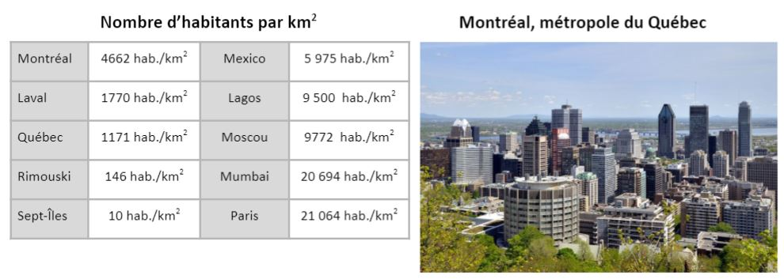
Source
Service national du RÉCIT, d'après Taxiarchos228, Nombre d'habitants au km2, avec le centre-ville de Montréal vu du mont Royal (2009), Service national du RÉCIT, univers social. Licence : Creative Commons BY-SA.La métropole montréalaise demeure le principal pôle de population au Québec. Sa région métropolitaine concentre environ la moitié des habitants de la province. Après un ralentissement marqué pendant la pandémie, la croissance a rebondi entre 2022 et 2024, portée par l'immigration et par les résidents non permanents.
La densité de population
La densité ne se lit pas de la même façon selon le territoire que tu observes.
- Ville de Montréal : environ 5 260 hab./km²
- Agglomération de Montréal, c'est-à-dire l'île : environ 4 370 hab./km²
- Région métropolitaine de Montréal : moins de 1 000 hab./km²
L'écart entre la première et la dernière ligne est la trace de l'étalement urbain : plus tu t'éloignes du centre, plus les habitants se répartissent sur de grandes superficies. À l'intérieur même de l'île, la densité varie beaucoup d'un arrondissement à l'autre. Le Plateau-Mont-Royal est le plus dense des 19 arrondissements, avec 104 000 habitants sur 8,1 km², soit 12 792 hab./km². Le quartier de Parc-Extension atteint 18 802 hab./km². À l'autre bout, les arrondissements de l'ouest de l'île se situent sous 2 000 hab./km².
Parmi les grandes villes canadiennes, seule Vancouver est plus dense que Montréal. La comparaison change toutefois si on ajoute les petites municipalités : Côte-Saint-Luc, Westmount et Montréal-Ouest, toutes situées sur l'île, dépassent la ville de Montréal.
Source : Ville de Montréal, profils sociodémographiques, recensement de 2021
Une population multiethnique
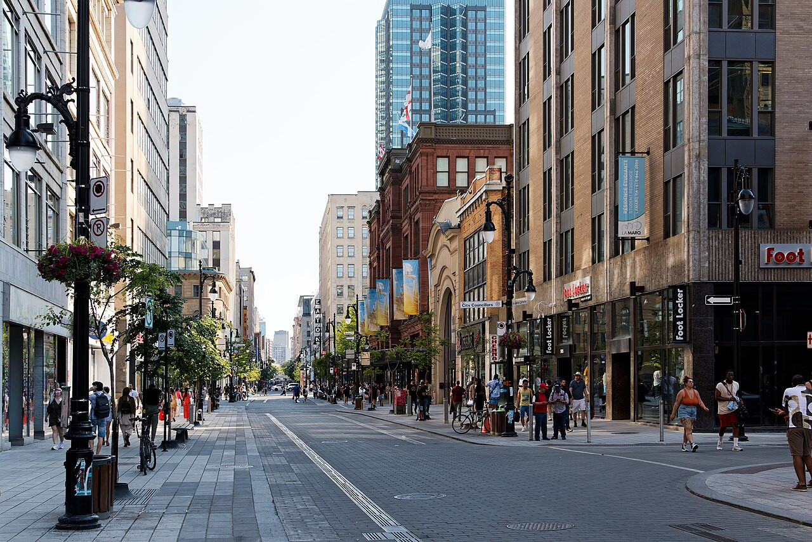
Source
D. Benjamin Miller, Intersection of Ste-Catherine and City Councillors, Montréal (2023), Service national du RÉCIT, univers social. Licence : Creative Commons Universal Public Domain Dedication.La population de Montréal est très diversifiée. Une part importante des Montréalais n'est pas née au Canada, et leur première langue n'est ni le français ni l'anglais. Ce phénomène porte le nom de multiethnicité. Le recensement de 2021 donne la mesure de ce plurilinguisme. À Montréal, 69,8 % de la population peut soutenir une conversation dans deux langues ou plus, et 23,7 % en parle au moins trois. Le taux de bilinguisme français-anglais y atteint 56,4 %, contre 7,4 % à Toronto et 6,5 % à Vancouver. Les trois principaux lieux de naissance des immigrants vivant à Montréal en 2021 sont Haïti, l'Algérie et la France. La métropole attire les personnes immigrantes pour deux raisons principales :
- on y trouve une concentration d'emplois et de services;
- certaines communautés y sont déjà établies, comme dans le quartier chinois ou dans la Petite Italie, ce qui facilite l'arrivée.
Source : Statistique Canada, recensement de 2021
Se déplacer dans la métropole
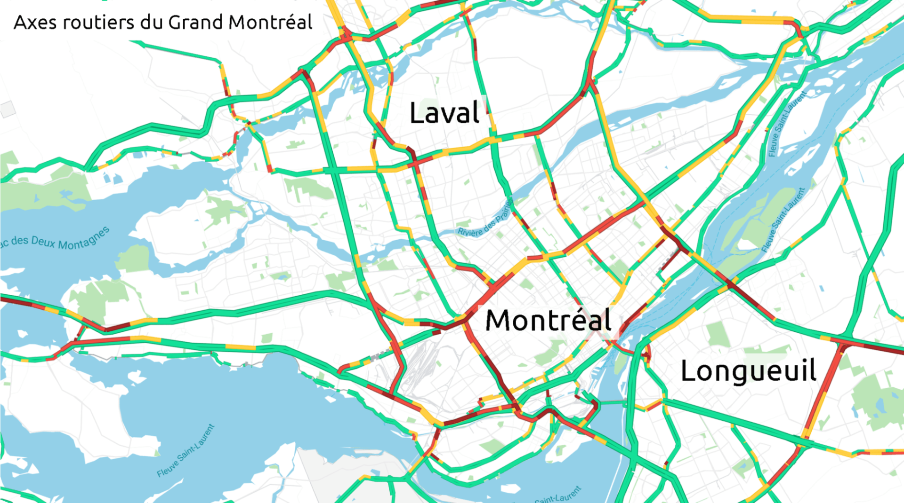
Source
Service national du RÉCIT, domaine de l'univers social, Entrer et sortir de Montréal, dossier Montréal, se déplacer dans une métropole, Service national du RÉCIT, univers social. Licence : Creative Commons BY-NC-SA.Une grande densité de population et une forte concentration d'emplois et de services exigent des infrastructures de transport nombreuses et variées. Toutes les métropoles de la planète vivent avec cette réalité et Montréal ne fait pas exception. Montréal est de plus une île, ce qui oblige à franchir l'eau. Les ponts Jacques-Cartier et Samuel-De Champlain sont les principaux liens vers la Rive-Sud, avec respectivement environ 90 000 et 130 000 passages par jour. Au nord, six ponts relient l'île à Laval. L'autoroute Métropolitaine traverse l'île d'est en ouest.
Source : Service national du RÉCIT, domaine de l'univers social
Le métro
Le métro de Montréal dessert l'île de Montréal ainsi que Laval et Longueuil. Il est inauguré le 14 octobre 1966, pendant le mandat du maire Jean Drapeau. Le réseau compte alors 26 stations réparties sur trois lignes. Aujourd'hui, il dessert 68 stations sur quatre lignes, pour 69,2 km de voies. Le prolongement de la ligne bleue vers l'est ajoutera cinq stations vers 2030. C'est le réseau de métro le plus achalandé au Canada, devant celui de Toronto, avec environ 978 000 déplacements un jour de semaine à la fin de 2025.
Le REM
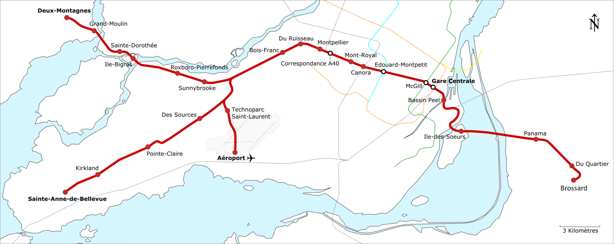
Source
Calvin411, Stations REM, Wikimedia Commons. Licence : Creative Commons BY-SA 4.0.Le Réseau express métropolitain est un métro léger entièrement automatisé, sans conducteur. C'est le plus grand projet de transport collectif de la région depuis le métro lui-même. Sa mise en service s'est faite par étapes :
- le 31 juillet 2023, l'antenne de la Rive-Sud, entre Brossard et la gare Centrale;
- le 17 novembre 2025, l'antenne Deux-Montagnes, vers Laval et la couronne nord;
- le 18 mai 2026, l'antenne de l'Anse-à-l'Orme, vers l'ouest de l'île.
Le réseau compte donc 23 stations sur 63 km, avec trois correspondances au métro : Bonaventure sur la ligne orange, McGill sur la ligne verte et Édouard-Montpetit sur la ligne bleue. L'antenne vers l'aéroport est annoncée pour 2027, ce qui portera le réseau à 27 stations sur 67 km.
Le réseau d'autobus et le Réso
Le réseau d'autobus de la Société de transport de Montréal complète le métro sur l'ensemble de l'île, avec environ 220 lignes de jour et 23 lignes de nuit. Le Montréal souterrain a été baptisé RÉSO en 2004. Il relie des immeubles, des universités, des stationnements, des hôtels, des musées, des centres commerciaux et 80 % des immeubles de bureaux du centre-ville aux transports en commun. On y accède par plus de 200 entrées. Trente-deux kilomètres de galeries souterraines le composent et on y trouve plus de 1 700 boutiques et plus de 200 restaurants. Environ 500 000 personnes l'empruntent chaque jour.
Le réseau routier
Le réseau autoroutier québécois compte 31 itinéraires différents. Il se concentre dans la région métropolitaine de Montréal, traversée par 18 voies rapides et autoroutes. La direction régionale du ministère des Transports y gère environ 2 705 km de routes, dont 1 754 km d'autoroutes. La congestion routière reste une difficulté quotidienne dans la région, en particulier sur l'autoroute Métropolitaine et aux abords des ponts aux heures de pointe.
L'aéroport international Montréal-Trudeau
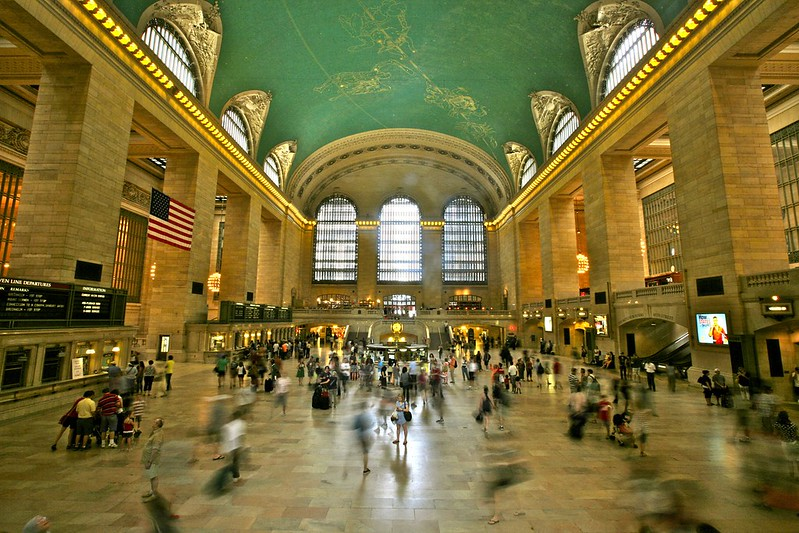
Source
Alex Proimos, Grand Central Terminal (2011), repris dans le dossier du RÉCIT, Service national du RÉCIT, univers social. Licence : Creative Commons BY-SA.L'aéroport YUL Montréal-Trudeau, autrefois appelé aéroport international de Montréal-Dorval, se trouve sur l'île de Montréal, à environ 20 km du centre-ville. En 2025, il a accueilli 22,4 millions de passagers. Il relie Montréal à 156 destinations par vols directs, dont 89 internationales, 34 aux États-Unis et 33 au Canada. Près de 200 entreprises occupent le site et il représente plus de 33 000 emplois directs. Une station du REM doit le raccorder au reste du réseau en 2027.
Un aéroport international facilite les déplacements touristiques, les congrès et les échanges économiques. C'est une des infrastructures qui distinguent une métropole d'une ville ordinaire. New York, pour sa part, se déplace surtout en transport en commun : un New-Yorkais sur quatre les utilise pour se rendre au travail, découragé par le prix du stationnement et par les péages.
Source : Service national du RÉCIT, domaine de l'univers social
Habiter la métropole : le centre-ville ou la banlieue
Montréal est en croissance. Elle attire des travailleurs, des étudiants, des familles et des personnes immigrantes, et les municipalités de la région métropolitaine se développent rapidement. Les banlieues des couronnes nord et sud se développent tout aussi vite. Une question se pose alors à ceux qui cherchent un logement : le centre-ville ou la banlieue?
Acheter
Le prix d'une propriété varie beaucoup selon l'endroit où l'on se trouve. En avril 2026, dans la région métropolitaine de Montréal, le prix médian d'une maison unifamiliale s'établit à 645 000 $ et celui d'un plex à 865 000 $. Une même maison ne vaut pourtant pas le même prix d'un secteur à l'autre, et l'écart se creuse entre l'île, les banlieues proches et les couronnes.
Source : Association professionnelle des courtiers immobiliers du Québec
Louer
Se loger est difficile depuis les années 2000 dans la région de Montréal. Le loyer moyen y a augmenté rapidement et il atteint environ 1 350 $ en 2026, selon les données de la Société canadienne d'hypothèques et de logement reprises par l'Association professionnelle des courtiers immobiliers du Québec. Le taux d'inoccupation, c'est-à-dire la part des logements libres, s'établit à 2,9 %.
Quand la demande dépasse l'offre, les prix montent. Parmi les facteurs avancés, on trouve le retard de plusieurs jeunes ménages à acheter une propriété et le retour de retraités vers l'appartement. Le marché locatif de Montréal demeure moins cher que celui de Toronto ou de Vancouver, ce qui n'empêche pas la pression de s'exercer sur les ménages à faible revenu.
Choisir la banlieue
Depuis les années 1950, beaucoup de ménages quittent l'île pour s'installer en banlieue. Ils invoquent le coût plus bas d'une propriété, la présence de parcs et d'espaces verts, et une densité de population plus faible. Ce mouvement porte un nom : l'étalement urbain.
L'étalement urbain
L'étalement urbain est l'expansion du territoire urbain en périphérie des villes, produite principalement par le développement des banlieues et la construction des autoroutes. Le phénomène s'est intensifié au pourtour de la région métropolitaine. De plus en plus de personnes s'installent dans les municipalités voisines de la région de Montréal, tout en venant y travailler. La Communauté métropolitaine de Montréal estime à 100 000 le nombre de personnes qui font ce trajet chaque jour, dont 94 % en automobile.
Source : Communauté métropolitaine de Montréal
L'étalement urbain et les terres agricoles
Le gouvernement de René Lévesque, porté au pouvoir en 1976, fait adopter la Loi sur la protection du territoire agricole, sanctionnée le 22 décembre 1978. Elle arrive au moment où les projets immobiliers gagnent les terres les plus fertiles de la province, autour de Montréal. La loi crée des zones agricoles permanentes où la construction résidentielle est encadrée. Aujourd'hui, plus de 2 200 km² du territoire de la Communauté métropolitaine de Montréal sont protégés à ce titre, soit environ la moitié de sa superficie.
L'étalement urbain et les gaz à effet de serre
Plus le territoire urbain s'étale, plus les distances à parcourir s'allongent et plus les infrastructures routières sont sollicitées. L'automobile devient alors le moyen de transport le plus pratique pour une part croissante des ménages, ce qui augmente les émissions de gaz à effet de serre. La Communauté métropolitaine de Montréal rattache aussi à l'étalement la hausse des coûts d'entretien et de construction des routes, l'allongement des temps de déplacement, la disparition de milieux naturels et la perte de biodiversité.
La gestion des déchets
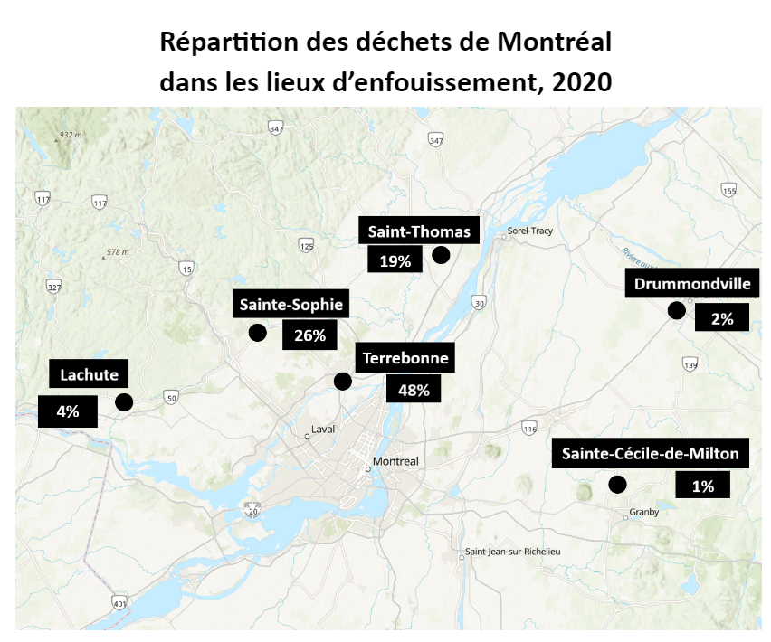
Source
Service national du RÉCIT, domaine de l'univers social, Enfouissement des déchets, dossier Territoire urbain : la métropole, Service national du RÉCIT, univers social. Licence : Creative Commons BY-NC-SA.La concentration de population produit aussi une concentration de déchets. En 2020, le Grand Montréal produisait environ 758 kg de déchets par personne par année, tous secteurs confondus. Plus de la moitié des ordures de la région sont enfouies à l'extérieur du territoire de la Communauté métropolitaine de Montréal.
Source : Service national du RÉCIT, domaine de l'univers social, d'après La Presse
Montréal, un lieu de pouvoir
Une métropole se définit par sa capacité à prendre des décisions et par sa concentration de lieux de pouvoir. Ce sont les espaces physiques où se prennent les décisions qui influencent un territoire à l'échelle régionale, nationale ou internationale. On les range habituellement en trois catégories.
Le pouvoir politique et administratif
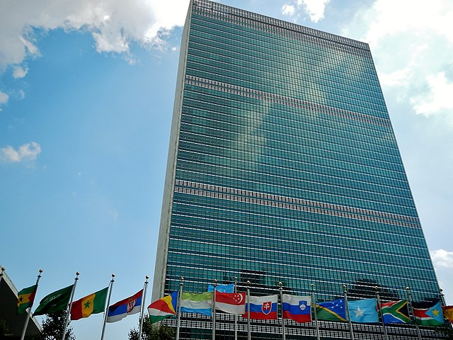
Source
qwesy qwesy, Le siège des Nations unies, repris dans le dossier du RÉCIT, Service national du RÉCIT, univers social. Licence : Creative Commons BY-SA.Ce pouvoir se concentre dans des institutions comme l'hôtel de ville, les ministères et les consulats. Ces lieux se trouvent souvent dans le centre historique de la ville. Les métropoles accueillent aussi les sièges d'organisations internationales. New York héberge le siège des Nations unies, Paris l'Organisation internationale de la Francophonie et Addis-Abeba l'Union africaine. Montréal abrite depuis 1946 le siège de l'Organisation de l'aviation civile internationale, une agence de l'ONU.
Source : Service national du RÉCIT, domaine de l'univers social
Le pouvoir économique et financier
Ce pouvoir se concentre dans le quartier central des affaires. On y trouve les sièges sociaux de grandes entreprises, les places boursières et les institutions bancaires. L'architecture verticale, les gratte-ciel, y sert d'indicateur. Montréal est le coeur de l'économie du Québec. Des entreprises de secteurs variés s'y sont établies pour se rapprocher des institutions financières et d'une main-d'oeuvre qualifiée : Saputo, Air Canada, le Canadien National, le Groupe Jean Coutu, la Banque Nationale ou Dollarama. Des zones commerciales majeures comme la rue Sainte-Catherine, les Galeries d'Anjou ou le Royalmount appartiennent au même ensemble.
Source : Service national du RÉCIT, domaine de l'univers social
Source
Bones64, Bourse de New York (2016), Pixabay, reprise dans le dossier du RÉCIT, Service national du RÉCIT, univers social. Licence : Libre de droits.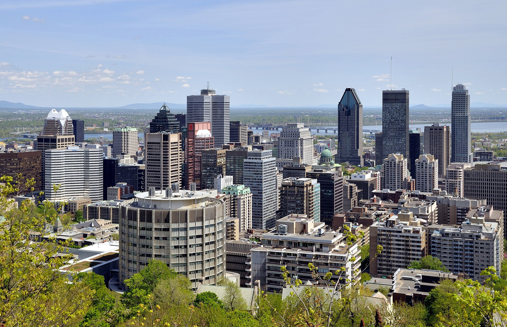
Source
Taxiarchos228, Montreal - QC - Skyline, Wikimedia Commons. Licence : Creative Commons BY 3.0.Le pouvoir culturel et de savoirs
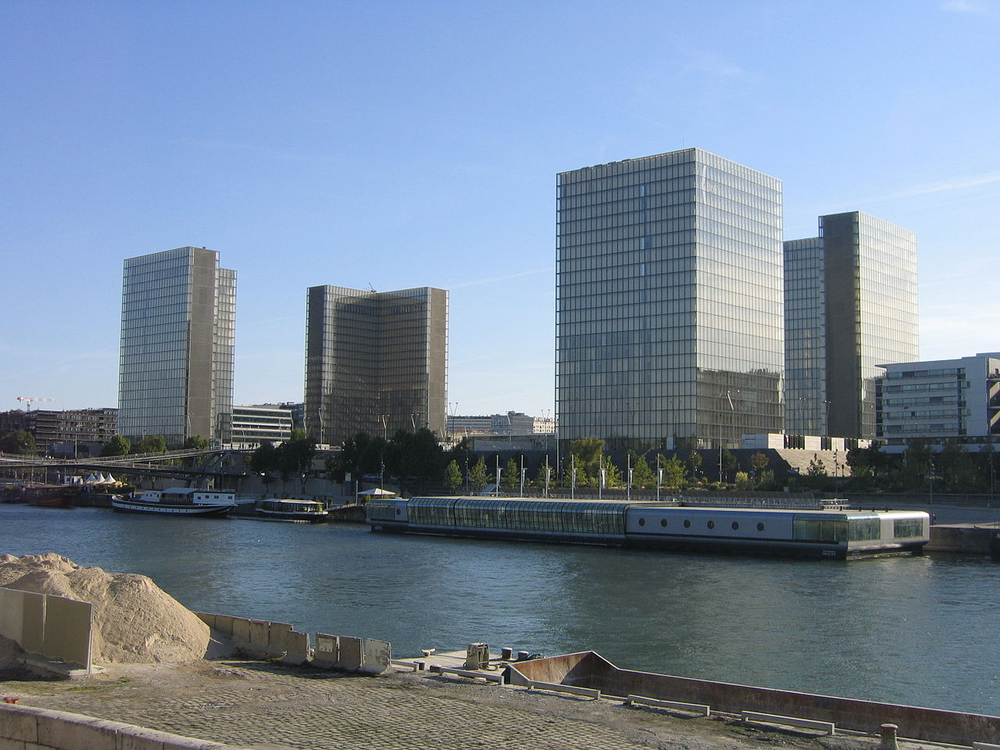
Source
Thesupermat, Vue globale de la BNF (2009), reprise dans le dossier du RÉCIT, Service national du RÉCIT, univers social. Licence : Creative Commons BY-SA.Les universités, les grands musées et les sièges des médias forment des pôles d'influence culturels qui participent à la diffusion de la culture et des savoirs. Montréal compte deux hôpitaux universitaires, le CUSM et le CHUM, ainsi que deux universités francophones, l'Université de Montréal et l'UQAM, et deux universités anglophones, McGill et Concordia. La métropole se présente aussi comme un pôle de l'intelligence artificielle, autour du Mila, l'Institut québécois d'intelligence artificielle.
La concentration des services se voit encore mieux par comparaison. Paris abrite 15 universités, 41 hôpitaux, deux aéroports internationaux, une bibliothèque nationale de 13 millions de documents et sept gares de grandes lignes.
Source : Service national du RÉCIT, domaine de l'univers social
L'Agence mondiale antidopage
L'Agence mondiale antidopage est une fondation internationale indépendante chargée d'harmoniser les règles antidopage dans tous les sports et tous les pays. Elle a inauguré son bureau principal à Montréal au début de 2002, dans la tour de la Bourse, à la Place Victoria. L'entente qui maintient ce bureau à Montréal court au moins jusqu'à la fin de 2031. L'Agence dispose par ailleurs de bureaux au Cap, à Lausanne, à Montevideo et à Tokyo. En 2018, le gouvernement du Québec a adopté une loi qui lui accorde une immunité de juridiction civile pour les décisions liées à sa mission.
Le Festival international de jazz de Montréal
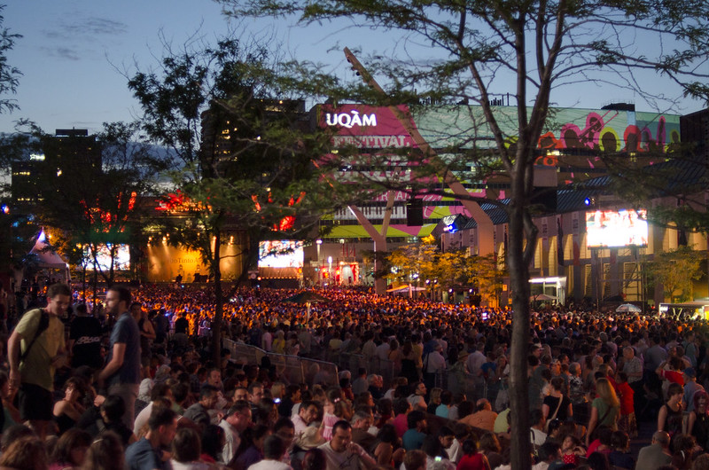
Source
Matias Garabedian, Festival international de jazz de Montréal (2012), repris dans le dossier du RÉCIT, Service national du RÉCIT, univers social. Licence : Creative Commons BY-SA.Le Festival international de jazz de Montréal occupe la Place des festivals, dans le Quartier des spectacles, un espace d'un kilomètre carré aménagé par la Ville de Montréal depuis 2002. Le quartier compte près de 30 salles de spectacles. Le festival réunit 3 000 musiciens d'une trentaine de pays et présente 500 concerts, dont les deux tiers sont gratuits. Il reçoit plus de deux millions de visites par année.
Source : Équipe Spectra, citée par le Service national du RÉCIT
Les activités et les services
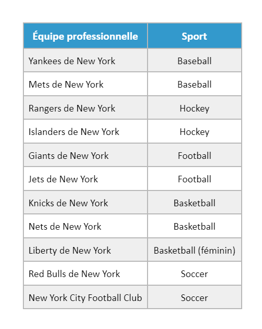
Source
Y2kcrazyjoker4, Vue aérienne du stade des Yankees de New York (2002), reprise dans le dossier du RÉCIT, Service national du RÉCIT, univers social. Licence : Creative Commons BY-SA.Quand il est question de Montréal, le terme concentration revient sans cesse. S'y concentrent les emplois, les entreprises, les habitants, les infrastructures de transport, les services, les activités et les lieux de pouvoir.
Les services offerts
Une métropole offre des services qu'une petite ville ne peut pas soutenir :
- des hôpitaux spécialisés et des centres de recherche;
- des universités et des collèges;
- des sièges de médias, télévision, radio et journaux;
- des institutions bancaires et des sièges sociaux.
Les activités offertes
Une métropole propose aussi des activités qui supposent un vaste bassin de population :
- des équipes sportives professionnelles et leurs installations;
- des sorties culturelles, musées, théâtres et salles de concert;
- des festivals;
- des grands parcs et des sorties en plein air.
Plusieurs équipes sportives choisissent de s'établir dans les métropoles, parce que leurs installations peuvent accueillir des dizaines de milliers de spectateurs. New York compte au moins deux organisations professionnelles par discipline, au baseball, au basketball, au football, au hockey et au soccer.
Source : Service national du RÉCIT, domaine de l'univers social
Pour aller plus loin
Le plan isométrique permet de représenter un territoire en maquette, à l'aide du logiciel Icograms. C'est une façon de vérifier si tu as bien saisi ce qui caractérise une métropole, parce qu'il faut placer toi-même les éléments.
Sources
- Service national du RÉCIT en univers social
- Documents d'histoire et de géographie, RÉCIT, premier cycle
- Communauté métropolitaine de Montréal
- Portrait socioéconomique de Montréal, gouvernement du Québec
- Portrait de la région métropolitaine, gouvernement du Québec
- Réseau express métropolitain
- Alloprof, la métropole de Montréal